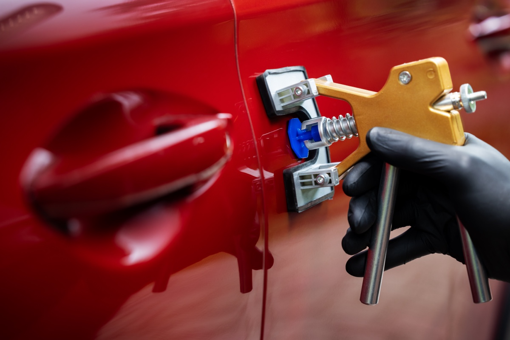

Door dings from parking lots

Southampton, PA
Paintless Dent Repair
You come back from the grocery store, and there it is: a door ding that wasn't there twenty minutes ago. No note on the windshield, of course.
- Free estimates
- Insurance paperwork handled
- ASE and I-CAR Gold Class certified
- Detailed after every repair
- Free estimates
- Insurance paperwork handled
- ASE and I-CAR Gold Class certified
- Detailed after every repair
Lifetime
Warranty on all repair work
If anything isn't right, we'll make it right.
274
Google reviews
4.9 stars on Google, counted on September 10, 2026.
12
Vehicle brands, factory-certified
INFINITI, Nissan, Hyundai, Kia, Acura, Honda, GM, Chrysler, Ford, Dodge, Subaru and Jeep.
Premier Paintless Dent Repair in Southampton, PA
It's a small dent, but it's your car, and now it's all you see every time you walk up to it.
Here's the good news: a small dent doesn't have to mean body filler, repainting, or days in the shop. At Tri-County Collision, our skilled technicians use paintless dent repair (PDR) to remove minor dents and dings while leaving your factory paint exactly as it is. It's a cost-effective fix from a family-owned Southampton shop serving drivers across Bucks and Montgomery County.
How Paintless Dent Repair Works
PDR is equal parts skill and patience. Instead of filling and repainting the damaged area, our technicians use specialized tools to work the metal back into shape, easing the dent out little by little until the panel sits smooth again. No filler. No sanding. No spraying. Your original finish stays untouched. That's exactly the point.
What PDR Can Fix
PDR is at its best on minor dents where the paint is still intact, including:
Hail damage
Small dents from minor collisions and everyday mishaps
And it isn't limited to one kind of vehicle. PDR works on cars, trucks, and SUVs alike.
When PDR Isn't the Right Fix
We'll be straight with you: not every dent qualifies. If the paint is cracked or scraped, if the metal is sharply creased, or if the damage sits along a panel edge, conventional repair is usually the better route. The upside of bringing your car to a full collision center is that we do that work too. One assessment, and you get the repair your car actually needs, not the only repair a shop happens to offer.
Why Drivers Choose PDR
- It's cost-effective. With no repainting involved, PDR typically costs less than conventional dent repair.
- Your factory finish survives. The paint your vehicle left the factory with stays right where it belongs.
- It protects resale value. Small dents drag down what your car is worth. Removing them without repainting keeps your car looking the way buyers want to find it.
- It's efficient. Qualifying dents can often be handled quickly, and we'll give you a clear picture of the timeline along with your free estimate.
An Honest Assessment and a Clear Estimate
Every PDR job starts the same way: we look at the dent, tell you whether it qualifies, and give you a clear estimate for the work. We pride ourselves on attention to detail. As far as we're concerned, a dent isn't gone until the panel looks like nothing ever happened.
Why Choose Tri-County Collision
- Family owned and operated in Southampton
- Skilled technicians experienced in paintless dent repair
- PDR for cars, trucks, and SUVs
- Your factory paint and finish stay intact
- Cost-effective alternative to conventional dent repair
- Full collision repair available if your dent doesn't qualify for PDR
- Free estimates and free consultations
- Serving Bucks and Montgomery Counties
Paintless Dent Repair for Bucks and Montgomery County
We remove dents and dings for drivers from Southampton, Richboro, Churchville, Warminster, Huntingdon Valley, Feasterville-Trevose, Bensalem, Hatboro, Horsham, Willow Grove, Langhorne, Warrington, Newtown, Doylestown, Jenkintown, Northeast Philadelphia, and the surrounding communities.
Paintless Dent Repair FAQs
What exactly is paintless dent repair?
Paintless dent repair (PDR) is a repair technique that removes minor dents without any repainting. Skilled technicians use specialized tools to return the metal to its original shape, so your factory finish never gets touched.
Will PDR damage my paint?
No, PDR will not damage your paint. Protecting your paint is the entire reason PDR exists. The dent is worked out gradually with specialized tools, and there's no sanding, filling, or spraying involved.
Can PDR fix hail damage?
Yes, hail damage is one of the things PDR handles best. Hail typically leaves a scattering of small, shallow dents with the paint intact. That's exactly the kind of damage this technique was made for.
What kinds of dents can't be fixed with PDR?
Dents with cracked or chipped paint, sharp creases, and damage along panel edges usually need conventional bodywork instead of PDR. If that's what your car requires, we handle it here. We're a full collision repair center, so you won't get bounced to a second shop.
How much does paintless dent repair cost?
The cost of paintless dent repair varies with the dent itself: how big it is, how deep, where it sits on the panel, and how many you're dealing with. Because there's no repainting involved, PDR is one of the most cost-effective repairs you can get. Estimates are free, so the fastest way to a real number is to call (215) 322-5350 or stop by.
Do you do PDR on trucks and SUVs?
Yes, paintless dent repair works on most vehicles, including cars, trucks, and SUVs.